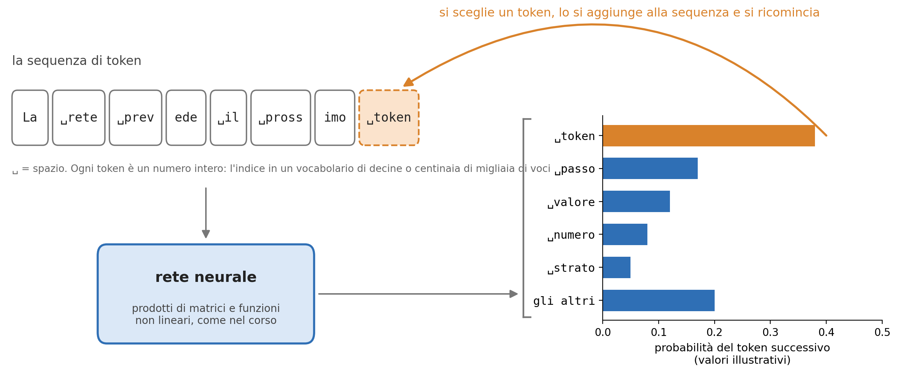
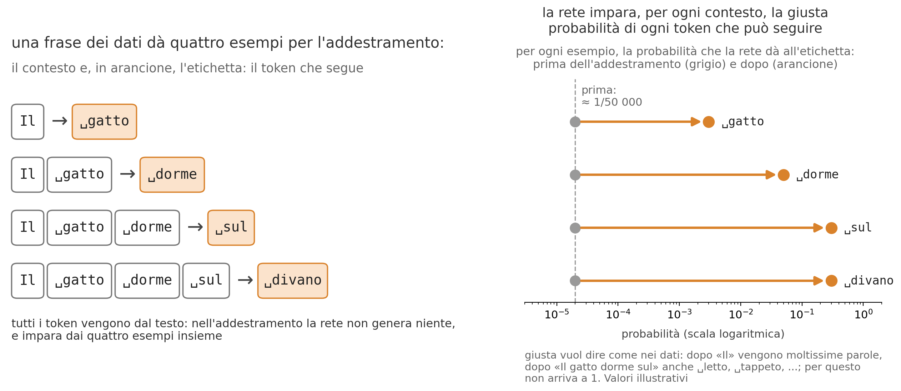
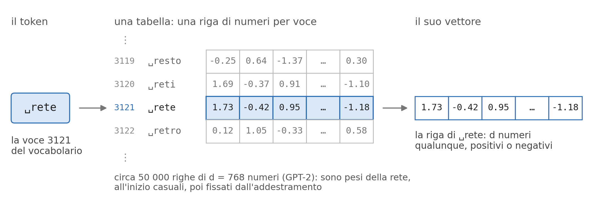
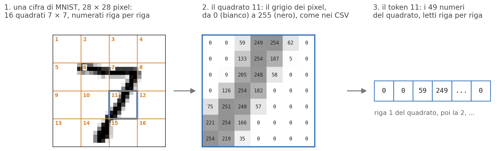
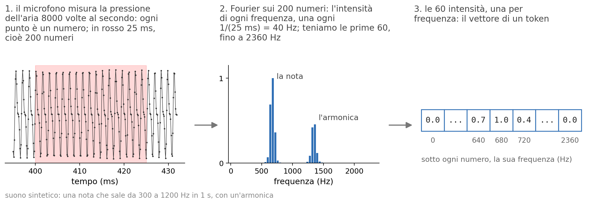
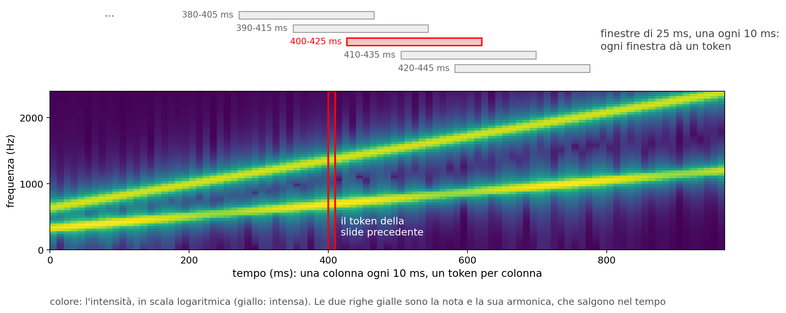
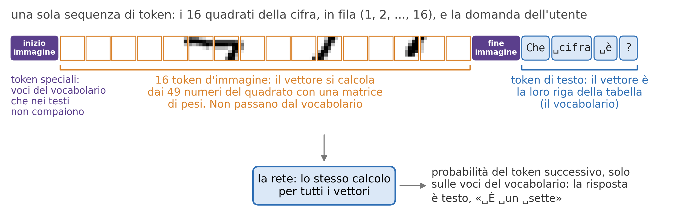
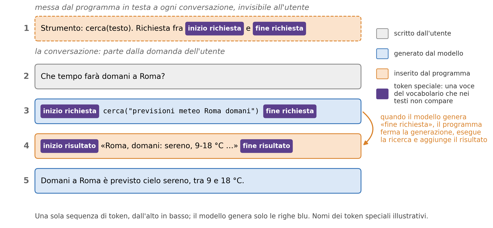
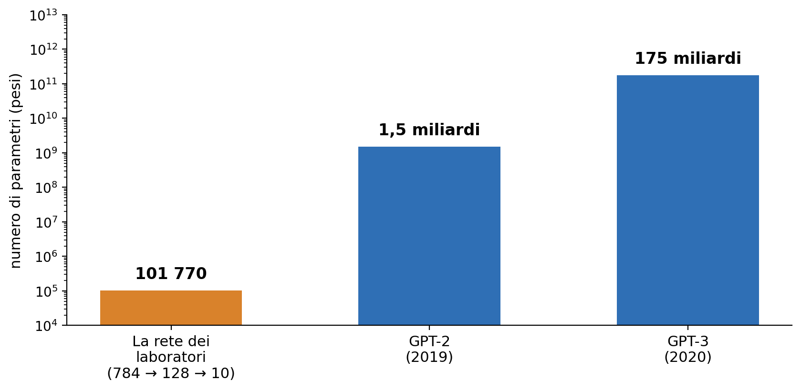

Programmazione Scientifica++: Lezione 13
Membri e metodi statici
Come funziona un modello linguistico

Un modello linguistico, come quelli degli assistenti tipo ChatGPT, fa una cosa sola: data una sequenza di token, pezzi di parola, calcola le probabilità del token successivo. Il programma che lo usa ne sceglie uno, lo aggiunge alla sequenza e ripete: una risposta intera è questo ciclo, un token alla volta.
Come impara

È un classificatore, come la rete MNIST dei laboratori: là 10 classi e l’etichetta è la cifra, qui una classe per ogni token e l’etichetta è il token che segue. Backpropagation e discesa del gradiente alzano la probabilità dell’etichetta in ogni esempio, su centinaia di miliardi di token. Un secondo addestramento, su conversazioni, ne fa un assistente.
Dal token al vettore

Una parola non ha numeri suoi: 3121 è solo la sua posizione nel vocabolario. Per il token \(i\) del testo, con \(\mathbf{u}_i\) tutto 0 tranne un 1 in posizione 3121:
\[\mathbf{x}_i = W\,\mathbf{u}_i + \mathbf{r}_i\]
\(W\,\mathbf{u}_i\) è la riga di ␣rete, di d numeri (\(W\) è la tabella trasposta); \(\mathbf{r}_i\), imparato anch’esso, dice dove sta il token nel testo: è un bias che dipende dalla posizione. È il primo strato della rete, un DenseLayer. Alla fine parole usate in modo simile, come ␣rete e ␣reti, hanno righe simili.
Un’immagine diventa 16 token

Ogni quadrato è un token, in fila come le parole di un testo. Come per il testo si moltiplica per una \(W\), ma ora \(\mathbf{u}_k\), i 49 grigi del quadrato \(k\), ha molti numeri diversi da 0:
\[\mathbf{x}_k = W\,\mathbf{u}_k + \mathbf{r}_k \qquad (k = 1, \dots, 16)\]
\(W\) (\(d \times 49\)) e \(\mathbf{r}_k\), il vettore della posizione \(k\) (come per le parole del testo), sono pesi imparati. Niente vocabolario: i quadrati possibili sono \(256^{49} \approx 10^{118}\), troppi per una tabella, ma \(W\,\mathbf{u}_k\) si calcola per ognuno. Nei modelli veri (Vision Transformer): 224 × 224 a colori, 196 quadrati 16 × 16, \(\mathbf{u}_k\) di 16 · 16 · 3 = 768 numeri.
Un suono diventa token

Il microfono dà già numeri, ma uno da solo non dice niente: un suono si riconosce dalle sue frequenze, e per questo si passa per la trasformata di Fourier. Le 60 intensità in 25 ms di segnale sono il vettore \(\mathbf{u}_k\) del token \(k\), e come per i quadrati \(\mathbf{x}_k = W\,\mathbf{u}_k + \mathbf{r}_k\), ora con \(W\) di \(d \times 60\). Niente vocabolario: le intensità sono numeri reali, e i vettori possibili non si possono elencare in una tabella.
Un suono: 100 token al secondo

La finestra di 25 ms avanza di 10 ms, quindi due finestre vicine hanno 15 ms in comune: un token ogni 10 ms. Nei modelli veri (Whisper): 16 000 numeri al secondo e \(\mathbf{u}_k\) di 80 bande di frequenza.
Una sola sequenza

Dopo il primo strato tutti i token, di testo, d’immagine e di suono, sono vettori di d numeri in uno stesso spazio, che la rete può confrontare fra loro. In ogni posizione la rete dà le probabilità del token che segue: nell’addestramento ogni posizione è un esempio (i quattro di «Come impara», in un solo passaggio); nell’uso serve solo l’ultima, che dà il token nuovo.
Come cerca sul web

Tutto parte dalla domanda dell’utente (riga 2); la riga 1 c’è già, in testa a ogni conversazione. Quando serve, il modello scrive una richiesta fra due token speciali (riga 3): lo ha imparato nel secondo addestramento, quello su conversazioni, perché fra gli esempi ci sono anche conversazioni con richieste di questo tipo; la ricerca la esegue il programma, poi la generazione riprende.
Gli stessi ingredienti del corso

Dentro ci sono gli strumenti del corso: prodotti di matrici come in DenseLayer, funzioni non lineari, backpropagation e discesa del gradiente. Cambiano la scala (GPT-3 ha 1,7 milioni di volte i pesi della rete dei laboratori) e un ingrediente in più, l’attenzione, che permette a ogni token di usare l’informazione degli altri. I dettagli, con la matematica, sono nelle slide di approfondimento.
Argomenti di oggi
- I metodi
static: metodi della classe, che si chiamano senza un oggetto, per esempio per crearlo - Gli attributi
static: un attributo condiviso da tutti gli oggetti della classe - Le variabili locali
static: una variabile di una funzione che conserva il suo valore fra una chiamata e l’altra - Il Singleton: una classe di cui esiste un solo oggetto
- Esercizio: un generatore di numeri casuali come Singleton
Gli argomenti di oggi nel framework
- Metodi
static. Ogni layer ha un metodostatic,create_from_stream, che legge da un file i dati di un layer salvato e crea l’oggetto. Èstaticperché si chiama quando l’oggetto non esiste ancora: è il metodo a crearlo. - Un oggetto unico. Il generatore di numeri casuali, che inizializza i pesi della rete, deve essere uno solo in tutto il programma: nel framework
randnumgenè un Singleton, l’ultimo argomento di oggi, erngè un reference all’unico oggetto.
La cartella della lezione
Oggi ogni esempio si scrive e si compila durante la lezione, in un progetto CMake come quello dei laboratori, ma in una cartella a parte.
CMakeLists.txt
cmake_minimum_required(VERSION 3.15)
project(Lezione13)
set(CMAKE_CXX_STANDARD 17)
set(CMAKE_CXX_STANDARD_REQUIRED ON)
set(CMAKE_CXX_FLAGS "${CMAKE_CXX_FLAGS} -Wall")
# AddressSanitizer (Lezione 08)
add_compile_options(-fsanitize=address -g)
add_link_options(-fsanitize=address)
# qui una riga add_executable per esempio- Create la cartella
LEZIONE_13, fuori dabasic_neural_plusplus, e apritela in VS Code. - Createvi il file
CMakeLists.txtqui a sinistra. - Dalla cartella
LEZIONE_13:
cmake -B build.
Il CMakeLists.txt è quello delle lezioni precedenti, con -Wall e l’AddressSanitizer.
Un eseguibile per esempio
Sopra ogni esempio c’è il nome del suo file. Quando lo incontrate, create il file, copiatevi il codice e aggiungete al CMakeLists.txt la sua riga:
Poi, dalla cartella LEZIONE_13, compilate ed eseguite solo quell’esempio:
cmake -B build rilegge il CMakeLists.txt: senza, --target non trova un esempio appena aggiunto. Con --target si compila solo l’esempio indicato: un esercizio non ancora finito non blocca gli altri. I messaggi citati sono quelli di g++ su Linux; con clang (macOS) il testo cambia, il significato no.
Creare un oggetto da un file
Nel framework una rete addestrata si salva su un file, e si rilegge per usarla senza riaddestrarla. Per ogni layer il file contiene il tipo e le dimensioni, per esempio DenseLayer seguito da 128 784.
Per rileggere la rete serve, per ogni tipo di layer, una funzione che legga le dimensioni e crei il layer. Dove scriverla?
- Un metodo normale si chiama su un oggetto, come
l.stampa(). Qui però l’oggetto non esiste ancora: è proprio quello da creare. - Serve un metodo che appartenga alla classe e si chiami senza un oggetto: un metodo
static.
Nel framework è create_from_stream, in ogni layer.
I metodi static
fabbrica.cpp
#include <iostream>
#include <sstream>
class DenseLayer {
private:
int Nnodes, Nin;
public:
DenseLayer(int Nn, int Ni) : Nnodes(Nn), Nin(Ni) {}
void stampa() const {
std::cout << Nnodes << " x " << Nin << "\n";
}
static DenseLayer* create_from_stream(std::istream& is) {
int nodes, in_features;
is >> nodes >> in_features;
return new DenseLayer(nodes, in_features);
}
};
int main() {
std::stringstream file("128 784");
DenseLayer* l = DenseLayer::create_from_stream(file);
l->stampa();
delete l;
return 0;
}Un DenseLayer ridotto, con il metodo del framework. Stampa 128 x 784.
- Il metodo è della classe, non di un oggetto.
- Crea l’oggetto con
newe ne restituisce l’indirizzo; ildeletelo fa ilmain(riga 23). - Al posto del file, uno
std::stringstream(Lezione 11). - Classe e
::, come per i namespace (Lezione 04).
Cosa manca in un metodo static
Un metodo static non è chiamato su un oggetto, quindi:
- non ha
this(Lezione 10): non c’è un oggetto corrente; - non legge gli attributi, come
Nnodes: non c’è un oggetto a cui appartengano. Può però creare oggetti, comecreate_from_stream, e leggere gli attributi, ancheprivate, di un oggetto che riceve come parametro, come ogni metodo della classe; - non può essere
const: ilconstin fondo a un metodo dice che il metodo non modifica l’oggetto su cui è chiamato (Lezione 09), e qui l’oggetto non c’è.
Provate: i metodi static
In fabbrica.cpp, un esperimento alla volta:
- Alla riga 12 aggiungete
constprima di{. Compila?
No: static member function ‘static DenseLayer* DenseLayer::create_from_stream(std::istream&)’ cannot have cv-qualifier. I cv-qualifier sonoconstevolatile. - Alla riga 15 scrivete
return new DenseLayer(Nnodes, Nin);. Compila?
No: invalid use of member ‘DenseLayer::Nnodes’ in static member function:Nnodesdi quale oggetto? - Togliete
delete l;(riga 23). Cosa dice l’AddressSanitizer?
detected memory leaks, 8 byte: l’oggetto creato dacreate_from_streamnon è mai stato distrutto.
Gli attributi static
Anche un attributo può essere static: esiste una volta sola per tutta la classe, condiviso da tutti gli oggetti. Il framework non ne usa.
- Stampa
2. Il metodostaticquante()legge l’attributostatic. inline(C++17) dà il valore nella classe. Senza,int Particella::totale_ = 0;va in un solo.cpp, non nell’header.- Una copia non lo incrementa: serve il costruttore di copia (Lezione 10).
- L’uso più comune sono le costanti, come
static constexpr double g = 9.81;: un attributoconstexpr(Lezione 06) deve esserestatic.
Esercizio veloce: cosa stampa?
Scopo: un altro uso di static, dentro una funzione; serve per il Singleton delle slide successive.
Senza eseguirlo: cosa stampa? E cosa stamperebbe senza static alla riga 4?
Poi verificate con il comando qui sotto.
Esercizio veloce: la risposta
Stampa 1 2 3; senza static, 1 1 1.
Una variabile locale normale nasce e muore a ogni chiamata. Una variabile locale static:
- nasce una volta sola, la prima volta che l’esecuzione arriva alla sua definizione;
- resta in memoria dopo l’uscita dalla funzione, fino alla fine del programma;
- è visibile solo dentro la funzione: nessun’altra parte del programma la può modificare.
Ha quindi la durata di una variabile globale e la visibilità di una variabile locale.
Il Singleton
Un solo oggetto per tutto il programma, come il generatore di numeri casuali del framework: è il design pattern Singleton.
- Costruttore
private(Lezione 07): fuori dalla classe non si crea unGeneratore. - Copia e assegnamento vietati con
= delete, come perSequential(Laboratorio 06). get()èstatic: restituisce un reference aunico, variabile localestaticche nasce alla prima chiamata. Le chiamate successive restituiscono lo stesso oggetto.
Il Singleton: il main
Output:
1
2
3Riga 20: g è un reference, cioè un alias dell’unico oggetto (Lezione 05), non una copia, che del resto è vietata.
altra_funzione non riceve g: con get() ottiene lo stesso oggetto, e il contatore prosegue.
Serve quando un oggetto deve essere uno solo in tutto il programma, come il generatore di numeri casuali del framework (esercizio a fine lezione); non per evitare di passare un parametro.
Provate: il Singleton
In singleton.cpp, un esperimento alla volta:
- All’inizio del
main, prima della riga 20, aggiungeteGeneratore h;. Compila?
No: ‘Generatore::Generatore()’ is private within this context. - Togliete la riga aggiunta e alla riga 20 togliete
&:Generatore g = Generatore::get();. Compila?
No: use of deleted function ‘Generatore::Generatore(const Generatore&)’. Senza&,gsarebbe una copia, cioè un secondo oggetto.
Esercizio: due generatori o uno solo?
Scopo: capire perché randnumgen, il generatore del framework, è un Singleton.
In esercizio_generatore.cpp (slide seguente) ogni Strato si crea il suo generatore Casuale: i due pesi iniziali sono uguali, perché i generatori partono dallo stesso seme. Rendete Casuale un Singleton:
- costruttore
private, copia e assegnamento vietati con= delete; static Casuale& get(), che restituisce la variabile localestatic Casuale unico;;- in
StratousateCasuale::get(); nelmainscommentate ilseed(42).
Output atteso: due pesi diversi, gli stessi a ogni esecuzione.
Il generatore: il file da completare
esercizio_generatore.cpp
#include <iostream>
#include <random>
class Casuale {
private:
std::mt19937 motore;
std::uniform_real_distribution<double> uniforme;
public:
// da completare: punti 1 e 2 dell'esercizio
Casuale() {}
void seed(int s) { motore.seed(s); }
double ranf() { return uniforme(motore); }
};
class Strato {
public:
double w; // un solo peso
Strato() { Casuale c; w = c.ranf(); } // da cambiare: punto 3
};
int main() {
// Casuale::get().seed(42); // da scommentare
Strato a, b;
std::cout << a.w << " " << b.w << "\n";
return 0;
}Il file compila così com’è e stampa due pesi uguali (con g++ su Linux 0.135477 0.135477).
std::mt19937 è il generatore Mersenne Twister della libreria standard, come in randnumgen; con uniforme, ranf() dà un double in [0, 1), come rng.ranf() nel framework.
Soluzione dell’esercizio: Casuale
esercizio_generatore.cpp
#include <iostream>
#include <random>
class Casuale {
private:
std::mt19937 motore;
std::uniform_real_distribution<double> uniforme;
Casuale() {}
public:
Casuale(const Casuale&) = delete;
Casuale& operator=(const Casuale&) = delete;
static Casuale& get() {
static Casuale unico;
return unico;
}
void seed(int s) { motore.seed(s); }
double ranf() { return uniforme(motore); }
};- Nessuno, fuori dalla classe, può creare un
Casuale: uno strato non può più farsi il suo. - Nessuno può copiarlo: una copia ripeterebbe gli stessi numeri dell’originale.
get()èstatic, quindi si chiama senza un oggetto;uniconasce alla prima chiamata e resta fino alla fine del programma.
Soluzione: Strato e main
Output (g++ su Linux):
0.796543 0.183435I due strati prendono numeri successivi dell’unica sequenza, e il seme si fissa una volta sola, nel main. Nel Laboratorio 08 farete lo stesso con randnumgen: rng.seed(42) in cima al main, rng.ranf() nei layer.